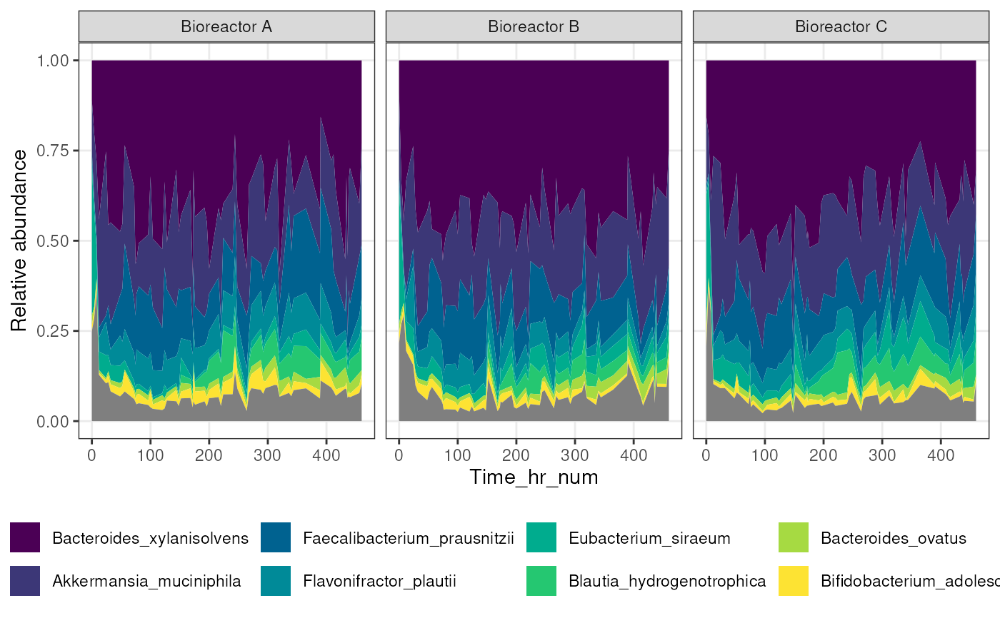
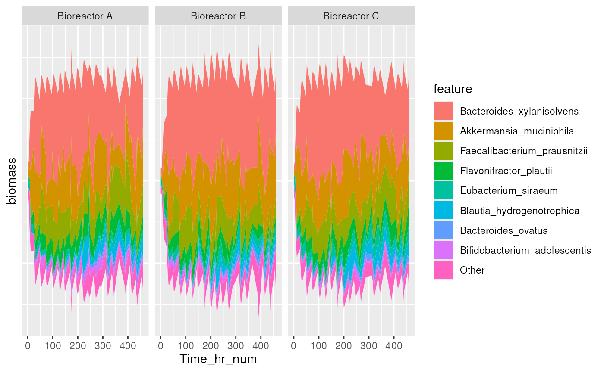
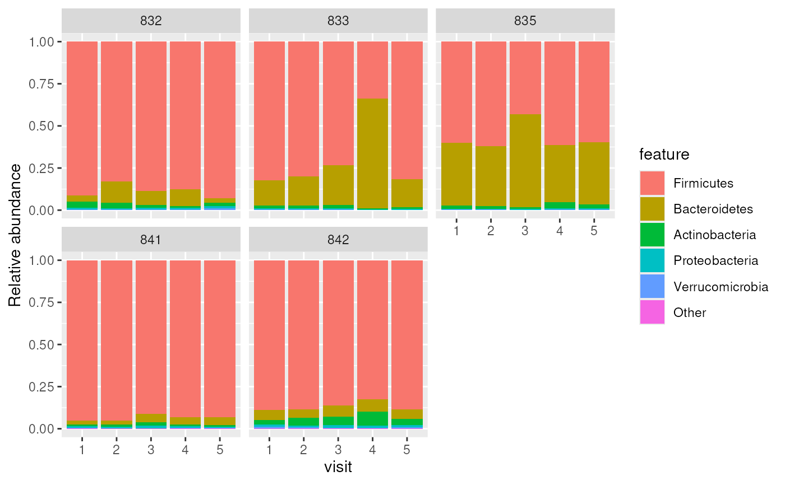
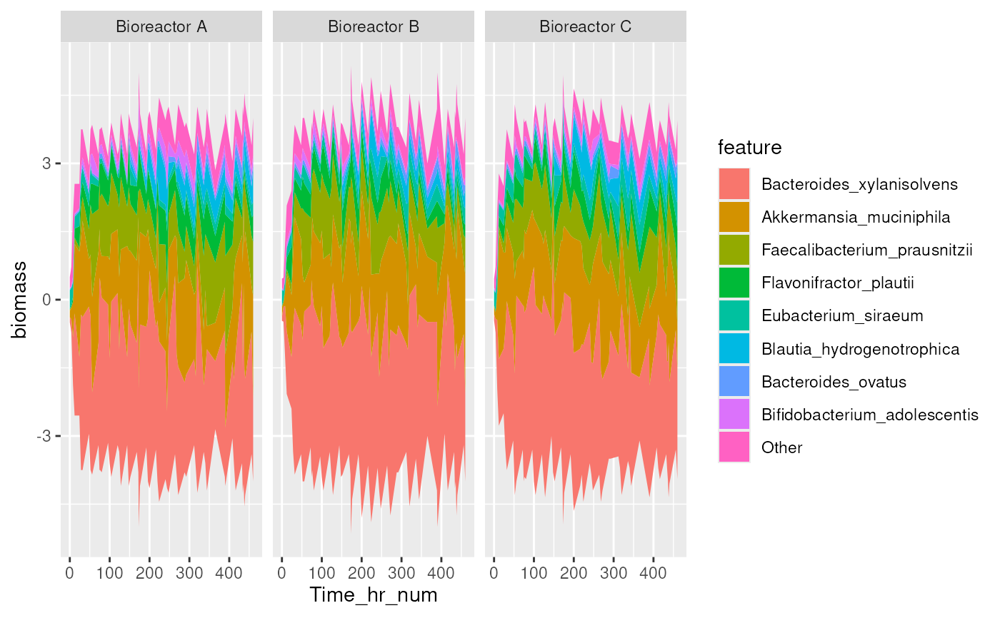

Plot composition over time
Source:R/AllGenerics.R, R/plotComposition.R, R/zzz-mae.R
plotComposition.RdplotComposition() stacks the relative abundances of the most
abundant features over time, for each subject or averaged over groups of
subjects.
Usage
plotComposition(x, ...)
# S4 method for class 'SummarizedExperiment'
plotComposition(
x,
time.col,
group = NULL,
assay.type = "counts",
features = NULL,
top = 5,
as.relative = TRUE,
layout = c("bar", "area", "stream"),
level = c("subject", "group"),
group.by = NULL,
max.gap = NULL,
...
)
# S4 method for class 'MultiAssayExperiment'
plotComposition(x, ..., experiment = 1L)Arguments
- x
a
SummarizedExperimentobject.- ...
additional arguments passed to
geom_colorgeom_ribbon.- time.col
Character scalar. Specifies the column fromcolData(x)that contains sampling times: numeric,Date,POSIXctor a factor of visits.- group
Character scalar. Specifies the column fromcolData(x)that identifies subjects. Each subject gets its own panel. (Default:NULL)- assay.type
Character scalar. Specifies the assay of abundances. To plot taxonomic ranks, agglomeratexfirst withmia::agglomerateByRank(). (Default:"counts")- features
Character vector. Features to plot. IfNULL, plots thetopfeatures with the largest mean plotted value: proportion, or assay value withas.relative = FALSE. The rest, and a feature already named "Other", are summed into "Other". (Default:NULL)- top
Integer scalar. Number of features to plot whenfeaturesisNULL. (Default:5)- as.relative
Logical scalar. Turns the assay into proportions of each sample (TRUE) or stacks its values as they are (FALSE), for absolute abundances such as relative abundances times a qPCR or flow cytometry load. (Default:TRUE)- layout
Character scalar. Draws stacked bars ("bar"), stacked areas ("area") or areas stacked around zero ("stream"), which shows changes of the total withas.relative = FALSE. (Default:"bar")- level
Character scalar. Plots each subject ("subject") or the mean composition of eachgroup.bygroup at each time ("group"). (Default:"subject")- group.by
Character scalar. Specifies the column fromcolData(x)that groups subjects whenlevel = "group". IfNULL, all subjects form one group. (Default:NULL)- max.gap
Numeric scalar. Breaks areas and streams where consecutive times of a panel are further apart than this, intime.colunits. For visits,NULLbreaks them at visits without a sample; otherwiseNULLnever breaks them. A time between two breaks draws no area; bars show it. (Default:NULL)- experiment
Character scalarorinteger scalar. For aMultiAssayExperiment, the experiment to plot; its samples get thecolDataofx. (Default:1L)
Examples
# A defined community of 16 species in three replicate bioreactors
data("minimalgut", package = "miaTime")
tse <- minimalgut
plotComposition(tse, time.col = "Time_hr_num",
group = "StudyIdentifier", top = 8, layout = "area")

# Biomass of each species, relative abundance times optical density,
# as a stream
tse <- tse[, !is.na(tse$OpticalDensity)]
tse <- mia::transformAssay(tse, method = "relabundance")
SummarizedExperiment::assay(tse, "biomass") <-
t(t(SummarizedExperiment::assay(tse, "relabundance")) *
tse$OpticalDensity)
plotComposition(tse, time.col = "Time_hr_num",
group = "StudyIdentifier", assay.type = "biomass", top = 8,
as.relative = FALSE, layout = "stream")

# Phyla of five subjects over their visits
data("hitchip1006", package = "miaTime")
tse <- hitchip1006
# Some profiles are stored twice; keep the first copy
tse <- tse[, !duplicated(t(SummarizedExperiment::assay(tse, "counts")))]
tse <- tse[, tse$subject %in% names(which(table(tse$subject) == 5))]
tse$visit <- factor(ave(tse$time, tse$subject, FUN = rank))
tse <- mia::agglomerateByRank(tse, rank = "Phylum")
plotComposition(tse, time.col = "visit", group = "subject")

# Mean phylum composition by sex at each visit
plotComposition(tse, time.col = "visit", group = "subject",
level = "group", group.by = "sex")
